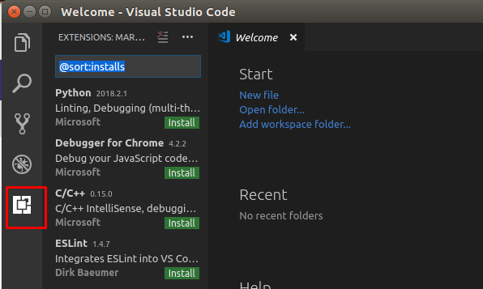
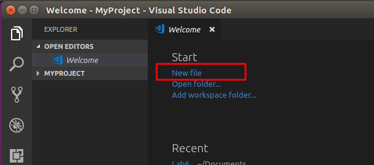
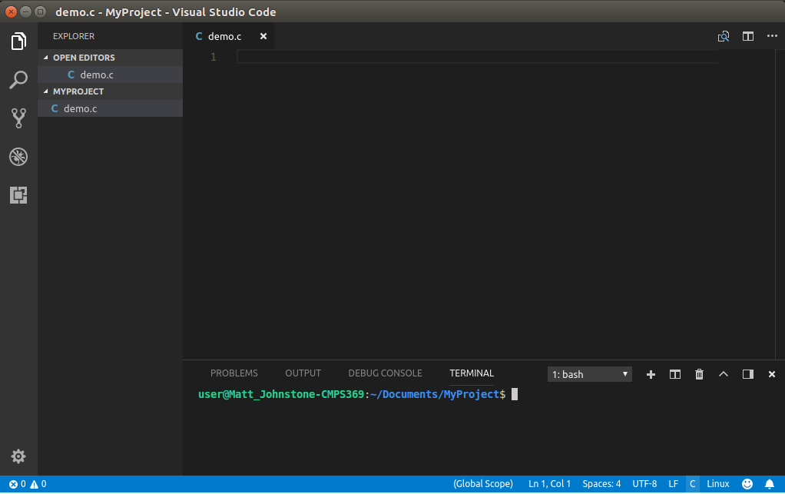
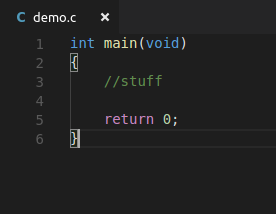
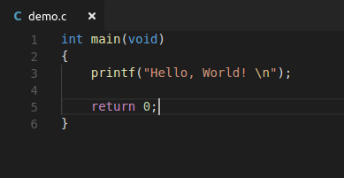
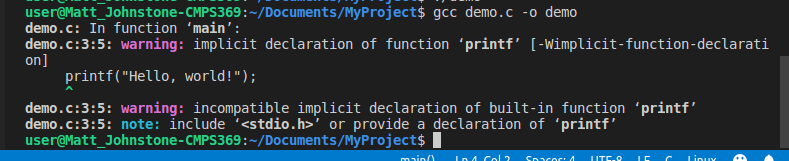
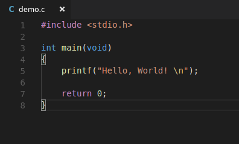
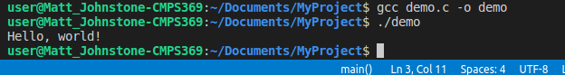

Let’s Get Down To Business! A Crash Course into the Pitfalls of C
In my last blog post I talked about the (incredibly long) history of C, and some of the benefits of using it. Today I’ll go through some of the setup and a bit of the basics for using it. It may sound at times like I’m warning against using C, due to the hazardous nature of some of its features. Not to worry, as a diligent programmer can safely navigate through the potential risks and produce clean, efficient, and most importantly, bug-free code. And that’s one of the real benefits of C, it really forces you to think about what you’re doing, since so much of the work is dependent on you, the programmer. There’s not much the language does to hold your hand, so time to put on the Big Boy Pants, and prepare for the compiler to humiliate you.
The first step to writing in C is the editor. Do you have Notepad? Congratulations you can become a C programmer. You don’t even need a fancy computer. Have a $30 Raspberry Pi? You can be a C developer. The barrier of entry and the cost of becoming a C programmer is pretty low. There are basically a million development environments for C, ranging from threadbare text editors, to fully functional IDEs. The nice people at JetBrains have a lot of great programming tools which are free for students, including their dedicated C IDE called CLion. Get it free while you’re still a student! Eclipse and NetBeans also have built in support for C programming – though you may need to download and install their C plugins depending on your setup. There are also many great text editors, including Atom, Sublime Text and Brackets, all with various plugins and tools for C programming. If Linux is your thing you have access to the dreaded Vim and Emacs, though using either is a bit like driving a stick shift. While submerged underwater. With your hands tied behind your back.
For demo purposes I will be using Visual Studio Code, a lightweight tool produced by Microsoft. It has versions for all platforms, Mac, Windows, and even Linux. It’s simple and fairly easy to use. Another caveat is that I’m going to be doing everything in Linux. If you’ve gone through the nightmarish process of getting the C compiler shambling to life in Windows, you’ll understand why. Save yourself the hours of panicked screaming at Bill Gates, and fire up your Ubuntu VM.
Head to VisualStudio.com and select your version to get going.
With that installed, you will need to get the C/C++ extension, to allow for some basic C programming features. There’s code formatting, and a debugger in case you really break things. Just click the extensions tab or hit Ctrl-Shift-X. Select the C/C++ extension, which should be near the top, and click Install. And that’s the whole setup process!

Click back to the Explorer tab or hit Ctl-Shift-E and select a folder to begin your project. I’ve created a folder called ‘MyProject’ in the ‘Documents’ folder, so I’ll open that folder as the home for my project. To get started, we’ll create a new file in MyProject by clicking the ‘New File’ icon or by pressing Ctl-N:

I’ve named this file demo.c. Remember, don’t forget that .c extension!
Here’s the screen with our empty file. To the left is the project explorer. At the bottom is the terminal, which is pretty crucial for C programmers. There are some default build tools available with Visual Studio, but we’ll keep it simple right now with just our demo.c file and the command prompt. If the terminal vanishes at any time, you can press Ctl + ` (the key to the left of 1) to bring it back.

Ok, so now what?
If you’re well-versed in Java, you will find the C syntax to be very similar. It’s no coincidence, since Java syntax is primarily rooted in the much older C language. You’ll find it’s very easy to write and understand C as a Java programmer.
The basics of any C program should look like this:

The main method in C is similar to Java’s main. Main can’t be called by any other function (aka method) and can only be called by the operating system. Note that here, main has a return type of int, and the program terminates with a return value 0, indicating to the operating system that the program completed successfully. The return value can actually be left out, as it is implicitly included. The return type of main can also be changed to void, indicating no return type. Also note the ‘void’ between the parentheses, indicating that main will not accept any arguments. Otherwise, parameters can be specified for main if the programmer needs it. There is no real ‘correct’ way, the int main(void) way is a convention more than a requirement.
Now to start with the famous “Hello, World!” scenario.

Save the file by hitting Ctl-S, then head down to the terminal.
Then, type gcc demo.c –o demo
gcc is the command for the GNU C Compiler, demo.c is the name of our file.
–o is the output flag, where we can specify a name for our file, followed by the desired filename
demo. Gcc should produce an executable for us, compiled from our C code. Here's what happens when we
execute our command in the terminal:

Oh.
Oh god.
Now is a good time to discuss the compiler. It really is trying to help us, I swear. There are roughly a
billion different C compilers, all with different versions, as well as a myriad of settings. With our call
to the compiler we can even specify a variety of different options. In our case, with the defaults here,
our compiler is actually being very helpful. “Implicit declaration of function printf” is kind of cryptic.
But right below it recommends to include stdio.h or to declare our very own printf function.
We’ll go with the former. Notice that, at no time writing the above code, did our development environment
try to warn us with some red lines. This is going to be a pretty common theme with C. The mentality of
“You’re the Programmer, you figure it out”’ as opposed to “Here, let me write this code for you.”
Let's apply the fix:

So what did we actually accomplish here? What’s with the hashtag? The pound sign here indicates what’s known as a Preprocessor Directive. Preprocessor Directives are basically special instructions to be handed over to the compiler, in order to modify the source code in some specified way before compiling it.
Here we used the #include directive, which lets the compiler know to include the stdio.h file before compiling. Stdio.h is a header file, and header files contain C function declarations, as well as macro definitions, which can be shared between files. Creating header files allows commonly used functions and operations to be re-used and shared. By including stdio.h we gain access to a few input/output operations, including the famous printf for displaying output to the console. It’s similar in practice to the import statement in Java, though the mechanics are a bit different. By default, the entirety of the Java library is available at all times. Whereas with C, the various fixtures and fittings can be added and subtracted according the program’s needs. C is much more modular, and is very lightweight compared to Java. Not to worry, we can accomplish a lot by including functions from the C standard library. Outside the standard library are vast amounts of user-created libraries. Chances are, if you’ve thought of it, a C library exists for it. Right now we’ll just stick with sdio.h.
Now for another crack at the compiler.

Success! Note the second line after the file is compiled into an executable by gcc.
./demo tells the terminal to execute the file named ‘demo’, and also that it is in the current working directory.
That OS lab knowledge is starting to come in handy. Or should I say, Hamdy!
So that’s the basic demo for getting started with C! With this knowledge you should now be capable of performing incredible feats. I encourage you to try doing even the most basic tasks in C, and to weep in horror as the compiler screams obscenities at you. For your first bit of homework I recommend you create a string of characters and have them display to the console. In the end you’ll probably find you’re a better programmer than when you started. Either that or you will never want to use C ever again.